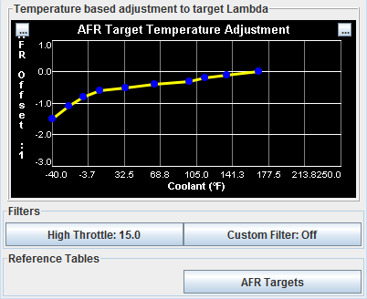

- AFR Temperature Adjustment to Lambda
- For most less radical engines targeting your standard stoich AFR is
desireable. However, for various reasons you may want the engine to run
more or less rich during warmup. Adjusting this curve allows you to
raise or lower the target AFR during warmup. By Adjusting the curve
down, the target AFR for that temperature will be lowered. For example
if your target AFR at 32 degrees is 14.7:1 under normal condition and
this table is set at -0.5, WUE Analyze will use 14.2:1 as the target
AFR.
- High Throttle Filter
- Sets a throttle threshold to filter data over. By default set to 15,
so any throttle position over 15% will be filtered during a WUE Analyze
Live session.
- Custom
Filter - Allows you to set any valid expression that will
filter additional input data.
- AFR Targets - Opens or select what AFR target Table to use. By
Default your normal running AFR table is used, but you can set this to
a different one or custom TunerStudio table.
Filters:
- High Throttle Filter - Sets a
throttle threshold to filter data over. By default set to 15, so any
throttle position over 15% will be filtered during a WUE Analyze Live
session.
- Custom Filter - This allows the
flexibility to create and apply any formula or mathematical expression
using any outputchannels you wish to set conditions to filter VE
Analyze input data.
Reference Tables:
- AFR
Targets - Opens or select what AFR target Table to use. By
Default
your normal running AFR table is used, but you can set this to a
different one or custom TunerStudio table.
Operation
of WUE Analyze should begin with a cold engine. If it is not that cold
this time of year, not to worry, you can use it on the warmup from what
ever temperature it is and perhaps come back to it when the weather
turns cooler.
To begin using WUE Analyze Live:
- Power on your ECU
- Connect TunerStudio, and go to the
WUE Analyze Screen by clicking on the "Tune Analyze Live - Tune For
You" tab. There will be a sub tab for WarmupEnrichment1, select that.
- On the Warm up Enrichment Analyze tab,
go ahead and click "Start
Auto Tune". There will be steady active filters until the engine is
started, so it will not begin processing the data.
- Now proceed to start your engine.
- Important! - Once your engine is running, try to maintain a
steady RPM through the warmup process. Normally idle is good, but if
you have an engine that does not yet want to idle while cold, hold the
engine at a steady RPM from 1500 to 2500 RPM.
- Wait and watch. See what changes are recommended until it gets up
to running temperature.
- Once the engine is warmed up, Do not turn off the engine. Review
the recommendation to insure it appears correct. Then Click "Stop
Autotune", then Burn.
- After Burn is clicked, the new Recommended WUE is saved to your
ECU and you can turn off the engine. Try out your new WUE settings on
the next warmup
©2013 EFIAnalytics.com